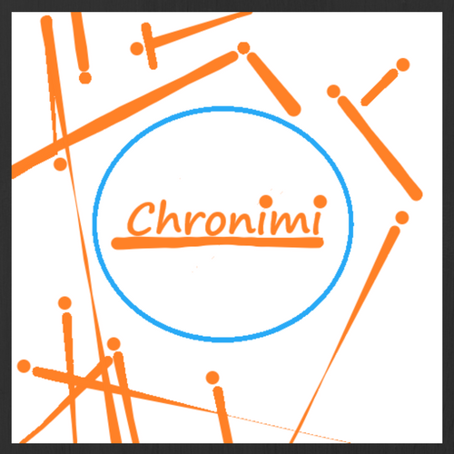

Home
Menu
Let's get started
Usage
Open Water
Files
EcoSystem
1.0.0
Chronimi
User interface in the very direction of creation.
Let's get flowing
New in Chronimi 1.0
Chronimi Theme
Open Source version of the GitHub Pages theme
Download .zip
Download .tar.gz
View on GitHub
CLOSE
Chronimi packages
Download .zip
Download .tar.gz
View on GitHub